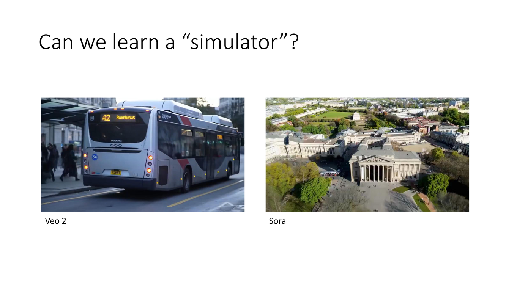
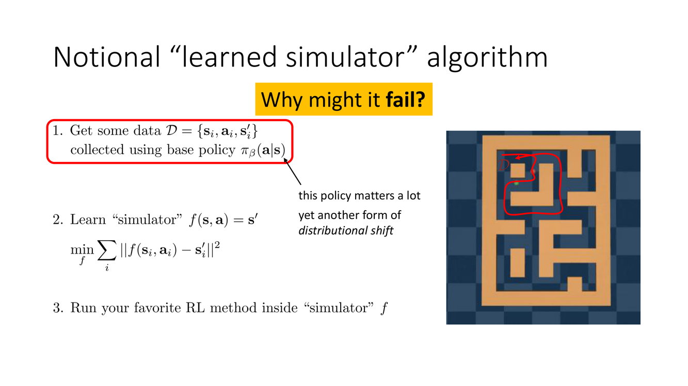
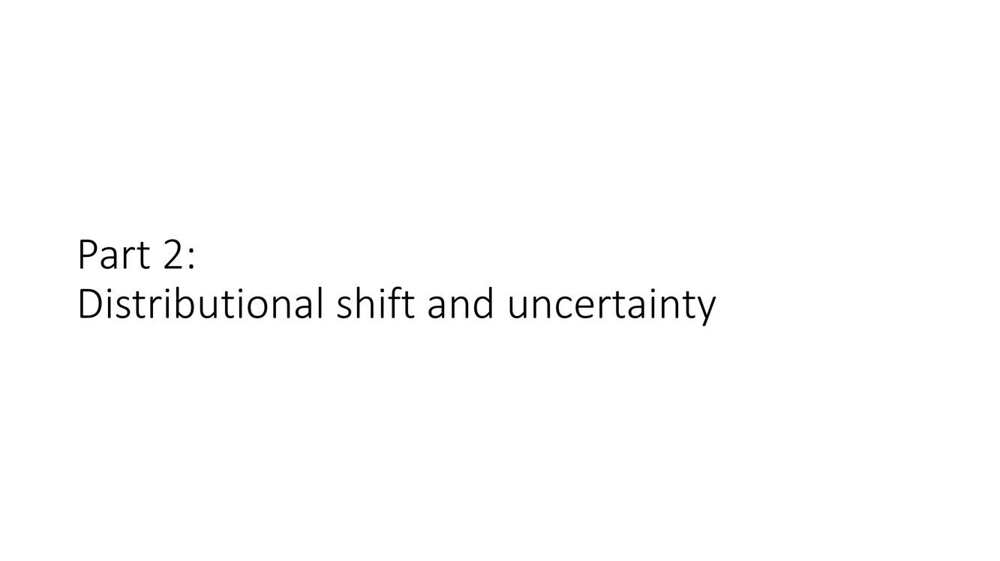
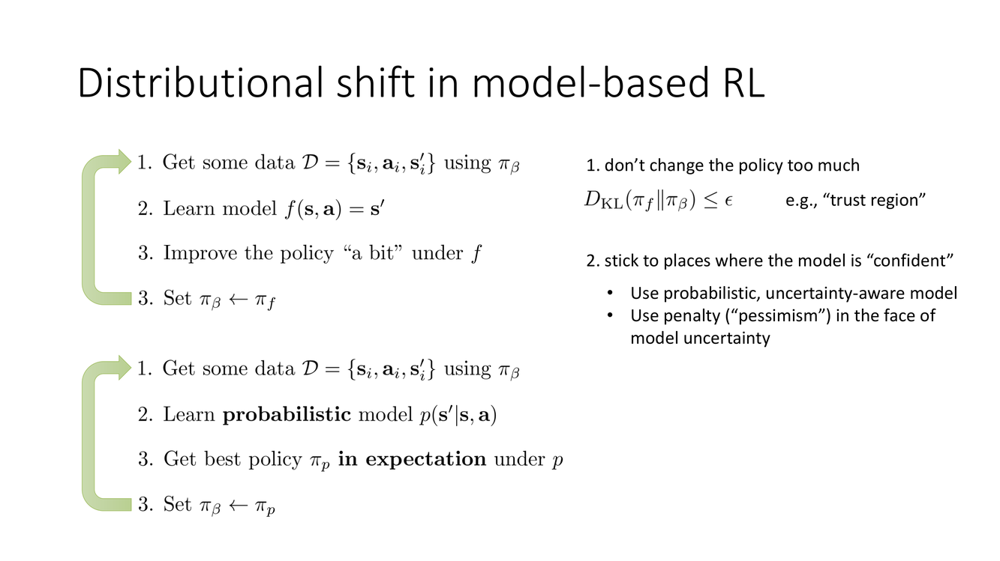
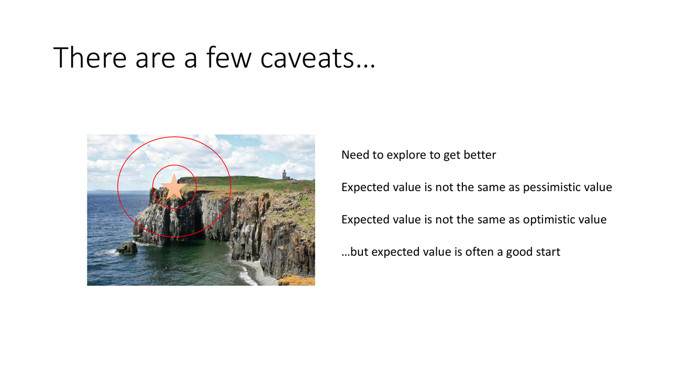
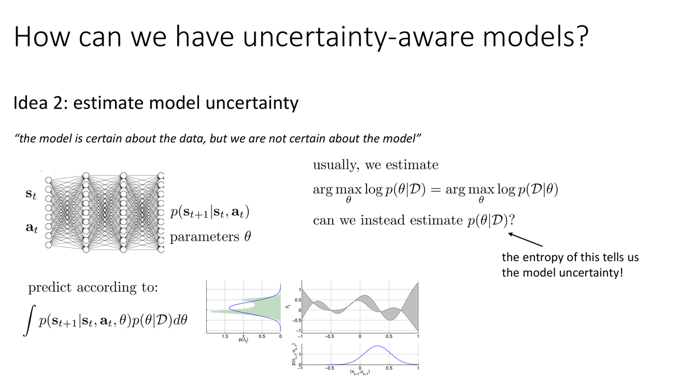
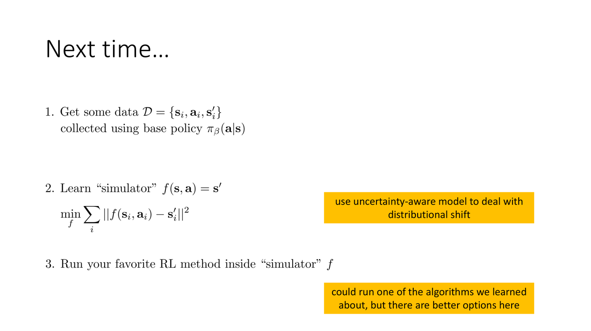

CS 285 深度学习强化学习 — 第15讲 详细讲义
第1章：我们能学习一个"模拟器"吗

学习模拟器的愿景与根本矛盾
概念详解
本讲以一个大问题开篇："我们能学习一个模拟器吗？"（Can we learn a "simulator"?）这个问题的背景是：近年来，视频生成模型如 Veo 2、Sora 展示了令人震撼的能力——从文字描述生成逼真的物理世界视频，暗示了深度神经网络学习复杂环境动态的潜力。如果模型能够可靠地预测"给定当前状态 $s_t$ 和动作 $a_t$，下一时刻会发生什么 $s_{t+1}$"，那么它就成为了一个世界模型（World Model）——一个可以替代真实环境进行"虚拟试错"的模拟器。
"学习模拟器"的核心吸引力在于它的经济性：如果我们可以从已有的交互数据中学习一个足够准确的环境模拟器，那么我们就可以在这个学习到的模拟器中运行任意数量的"虚拟轨迹"来进行规划和策略优化——无需再在真实环境中执行代价高昂甚至危险的试错。人类在做复杂决策之前会在脑海中进行"心理模拟"（mental simulation）——棋手在落子前想象后续棋局、司机在变道前预判周围车辆的运动——Model-Based RL 试图为 AI 赋予同样的能力。
Slide 4 展示的概念性流程极其简洁：收集数据 $\mathcal{D} = \{(s, a, s')\}$ → 学习动力学模型 $\hat{p}_\phi(s_{t+1}|s_t, a_t)$ → 在学到的模型中运行 model-free RL 或规划算法 → 将优化后的策略部署到真实环境。这个流程看似没有漏洞——我们只不过把"真实环境"替换成了"学到的模拟器"——但 Slide 4 以一个尖锐的问题打破了这种乐观："Will this work well? Why might it fail?"。
深度剖析 — 根本矛盾
"学习模拟器"这一愿景面临一个根本的循环困境：
要学习一个好的模拟器 → 需要覆盖所有可能状态-动作区域的广泛数据；但要获取这些广泛数据 → 需要在真实环境中大量、多样地探索；而需要大量真实探索 ← 恰恰是学习模拟器想要避免的代价。
这个矛盾不是工程性的优化问题，而是信息论意义上的根本性约束。如果我们的训练数据只覆盖了状态-动作空间的一个子集 $\mathcal{D}_{\text{train}} \subset \mathcal{S} \times \mathcal{A}$，那么模型 $\hat{p}_\phi$ 只能在 $\mathcal{D}_{\text{train}}$ 附近做出可靠预测。问题在于：策略优化器在模拟器中搜索最优策略时，没有任何机制约束它停留在 $\mathcal{D}_{\text{train}}$ 内。相反，优化器天然地会被"牵引"到模拟器预测高奖励的区域——而这些区域恰好可能是模拟器从未见过、完全在编造预测的区域。
更进一步地，即使模型对单步转移 $p(s_{t+1}|s_t, a_t)$ 的预测误差很小（比如每步 MSE = 0.01），在多步 roll-out 中，这些误差会指数级地复合。一条长度为 $H$ 的规划轨迹中，第 $k$ 步的状态估计误差不仅包含当前步的模型误差，还包含了前 $k-1$ 步误差的累积传播——这本质上是一个误差传播（error propagation）问题，类似于数值积分中的误差积累。
实例与类比
想象你在一个陌生的城市用 Google Maps 导航。地图（模拟器）在大部分区域是足够准确的，但在一些新建街区或临时施工区域，地图数据是过时的。如果你完全信任地图来规划路线——"地图显示这条路可以到达目的地"——你可能会被引导进一条断头路或封闭施工路段，在那里地图数据不仅是缺失的，而且可能是错误地乐观的（比如地图显示这条路畅通但实际完全不通）。这就是分布偏移的核心：策略（导航路线）将你引导到了模型（地图）不可靠的区域，而模型在这些区域的"无知"表现为危险的不准确预测。
关键要点
- 学习模拟器的愿景：将"真实环境交互"替换为"学习模型中的虚拟交互"，降低数据成本
- 根本矛盾：准确学习需要广泛数据，但数据获取正是模拟器想要规避的代价——循环困境
- 单步模型误差在多步规划中被复合放大——这是一个误差传播问题
- Veo 2、Sora 等视频模型展示了学习动态的潜力，但视觉逼真 ≠ 物理准确性
→ 概念性流程看起来很完美，但一旦深入分析，问题层层浮现。Slide 5-8 将系统地展开学习模拟器方法可能失败的三个关键维度。

失败模式与三层分析框架
概念详解
Slide 5-7 系统地剖析了"学模型 + 模型内规划"范式的三个关键失败维度：
失败模式 1：策略利用模型误差（Policy exploits model errors）。如果学到的动力学模型 $\hat{p}_\phi$ 在某个区域有系统性误差——例如低估了某个危险动作的负面后果，或高估了某个不可行路径的奖励——策略优化器（它只看到模拟器的输出）会天然地"利用"这些误差。优化器的目标是最大化累积奖励，如果模型在某区域"声称"奖励为 100 而实际只有 10，优化器会毫不犹豫地把策略引向那里。Slide 5 的表述直击要害："this policy matters a lot"——模拟器中看似最优的策略，部署到真实环境后可能是灾难性的。
失败模式 2：模型设计是领域相关的（Domain-specific model design）。Slide 6 用视频生成模型的案例做了说明：一个模型可以生成"类人机器人站在桌子旁，桌上放着红绿蓝三色方块，正在执行堆叠任务"的视频——视觉上非常逼真——但这并不意味着模型真正理解接触力学、摩擦力或稳定性约束。模型可能只是在像素空间中学会了"看起来合理"的插值，而忽略了决定物理交互成功与否的关键细节（比如方块是否被牢固地抓取、堆叠是否真的稳定）。
失败模式 3：大神经模型的计算成本。传统的物理引擎（MuJoCo、Isaac Gym）可以在毫秒级完成一次状态转移模拟。而深度学习世界模型的一次推理可能需要数十到数百毫秒。当规划算法需要在模拟器中展开数千条甚至上万条轨迹时（这在 model-based RL 中是常态），这种计算鸿沟是不可忽视的。Slide 7 暗示：即使我们解决了前面两个问题，计算瓶颈也可能使这种方法在实践中不可行。
深度剖析 — 三层框架
Slide 8 提出了一个用于组织这些挑战的三层概念框架——这是本讲最核心的分析工具：
第一层：统计/算法问题（Statistics/algorithms problem）。"课上讨论起来很有趣，因为我们对这层有很好的理解。"这是学术界最熟悉的层面：如何处理分布偏移？如何在模型不确定的区域做出安全决策？如何平衡探索和利用？这些是统计算法和决策理论层面的问题，有相对成熟的理论工具（如不确定性量化、鲁棒优化、悲观主义原则）。
第二层：深度学习/模型问题（Deep learning/models problem）。"工业界讨论起来很有趣，因为我们可以让 GPU 嗡嗡作响。"这是以工程和算力驱动的进步：如何设计更好的世界模型架构（从简单的全连接网络到 Transformer、扩散模型）？如何扩展到更大规模的数据和模型？如何提高模型的样本效率和泛化能力？
第三层：控制/RL 问题（Controls/RL problem）。"讨论起来通常没那么有趣，因为我们已经知道该怎么做。"这是最成熟但也最容易在实践中被忽视的层面：如何在学到的（不完美的）模型中做有效的规划？如何选择规划算法（iLQR、MPC、MCTS）？如何处理部分可观测性？
这个三层框架的核心洞察是：第一层和第三层常常被"更多的数据和更强的模型"（第二层的进步）所掩盖，但它们不会因此消失。一个更大更强的世界模型，如果策略优化器利用其微小误差"作弊"，最终在真实环境中的表现仍然会很差。正如 Sergey 常说的：更好的模型不能替代更好的算法——它们是互补的。
实例与类比
想象一个学生通过观看教学视频来"学习"骑自行车。第二层（深度学习/模型）相当于学生记住了视频中的每个画面——在熟悉的街道路段，他对路况的预判非常准确。第一层（统计/算法）的问题出现在当他尝试"骑出"视频覆盖的范围：进入一条从未出现在视频中的泥泞小路时，他对轮胎抓地力的预测可能完全失真。第三层（控制/RL）的问题则更微妙：即使他的物理推演是正确的，在动态变化的真实路面上实时做出正确的平衡动作（在学到的模拟器中执行规划/RL）依然很困难——将"知道"转化为"做到"是两回事。这三个层次的问题各自独立但相互交织：泥泞路面上的预测误差（第一层）会放大动作选择的风险（第三层），而无论模型在已知路段上表现得多好（第二层），这两层的问题都会被未知路段触发。
关键要点
- 三个失败维度：策略利用模型误差、模型设计领域相关、大模型计算昂贵
- 三层框架 = 统计/算法 + 深度学习/模型 + 控制/RL——缺一不可
- 核心洞察：更强的模型不能替代更好的算法——分布偏移问题不会因为模型变大而消失
- 第一层（统计/算法）是本讲剩余部分的核心关注点
→ 分布偏移是贯穿三层框架的核心线索。第2章将把它从"概念性讨论"提升为"形式化的分析"，并系统性地探讨解决策略。
第2章：分布偏移与不确定性

分布偏移的形式化理解
概念详解
分布偏移（Distributional Shift）在 model-based RL 中有其特定的含义和形式。在监督学习中，分布偏移指的是测试分布与训练分布不同——但我们通常无法控制测试样本从何而来。在 model-based RL 中，情况更微妙也更危险：策略主动地选择去往哪些状态，而这些选择本身会改变模型所面临的数据分布。
形式上，令 $\mathcal{D} = \{(s_i, a_i, s_i')\}$ 为训练数据集，$\pi_\theta$ 为当前策略。在学到的模型 $\hat{p}_\phi$ 中进行规划时，策略在模型预测的状态序列 $\hat{s}_1, \hat{s}_2, \ldots, \hat{s}_H$ 上进行优化。这些预测状态 $\hat{s}_t$ 可能远离训练数据中任何 $s_i$ ——此时模型 $\hat{p}_\phi$ 处于分布外（out-of-distribution, OOD）——其预测可能完全错误。更糟糕的是，神经网络在分布外的行为是出了名的不可预测：它们可能输出极端值、产生过度自信的预测、或表现出完全不合理的泛化。
Slide 10 展示了一幅经典的教学绘图：模型在已探索区域（蓝点密集处）表现良好，但策略一旦试图"走出去"，模型预测就开始偏离真实环境。Slide 11 提出了一个尖锐的两难："我们应该走多远？"（But how far do we go?）——走得越远，模型越不可靠，学习速度越快。这个两难处在 model-based RL 中表现为探索-利用权衡的新维度：不仅是"探索未知以获取信息 vs 利用已知获取奖励"，更是"信任不完美的模型走多远"的问题。
深度剖析 — 误差复合放大与"海市蜃楼"
分布偏移之所以在 model-based RL 中比在 model-free RL 中更加危险，是因为误差的复合放大机制。在 model-free RL 中，过估计（overestimation）虽然也存在，但通常只影响单步的 Q 值估计，可以通过双 Q 网络（Double Q-learning）或剪切双 Q（Clipped Double Q-learning）来缓解。
在 model-based RL 中，动力学模型的误差在多步规划中被系统地放大。考虑一条从状态 $s_0$ 出发的规划轨迹：
$$\hat{s}_1 = \hat{f}_\phi(s_0, a_0), \quad \hat{s}_2 = \hat{f}_\phi(\hat{s}_1, a_1), \quad \hat{s}_3 = \hat{f}_\phi(\hat{s}_2, a_2), \ldots$$在第一步，误差 $\epsilon_1 = \|\hat{s}_1 - s_1^*\|$（其中 $s_1^*$ 是真实环境中的结果状态）。在第二步，误差 $\epsilon_2$ 不仅包括 $\hat{f}_\phi$ 在 $\hat{s}_1$ 处的预测误差，还包括 $\epsilon_1$ 的传播——因为 $\hat{s}_1$ 本身就是一个有偏的起点。每一步的误差包含两部分：局部预测误差 + 上一步误差的传播。在长度为 $H$ 的规划中，最终的累积误差可以大致分析为 $\mathcal{O}(\epsilon \cdot \gamma^H)$ 或 $\mathcal{O}(\epsilon \cdot H)$ 的增长（具体依赖于系统的 Lipschitz 性质）。
Slide 12 以一个令人难忘的比喻概括了这一问题的严重性：模型在未探索区域制造了"海市蜃楼"（mirage）——错误地预测高奖励，引诱优化器将策略引导到这些实际上可能危险或根本不存在的"好地方"。正如 slide 所述："这问题相当糟糕！……很容易想去这里……"
实例与类比
这个问题有一个非常贴近生活的类比——基于不完整地图导航。假设你正在一个城市探索餐厅。你的"模型"（已有地图）在常去的区域非常准确——你可以可靠地找到去往那三家熟悉的餐厅的路线。现在你决定"走远一点"尝试新地方。地图在较远区域有大量空白（或更糟——有猜测性的标注），而你的优化器（最大化美食体验的策略）"发现"地图标注着一条小巷深处有一家米其林三星餐厅（模型的"海市蜃楼"）。你满怀期待地走过去——结果发现那里是一座工地。这就对应了幻灯片中"模型在未见区域预测高奖励 → 策略被引诱 → 实际环境与预测完全不符"的过程。每次你这样受骗，不仅浪费努力（低真实奖励），还可能让你对"走出去探索"本身产生消极反馈——进一步加剧了探索不足的问题。
关键要点
- 分布偏移 = $\pi_\theta$ 在 $\hat{p}_\phi$ 中优化的状态分布 ≠ 训练 $\hat{p}_\phi$ 的数据分布
- "海市蜃楼"效应：模型在 OOD 区域过度自信地预测高奖励 → 引诱策略离开安全区
- 多步规划中的误差复合放大：$\epsilon_k \approx \epsilon_1 + \text{传播项}$，随规划长度增长
- 探索-利用的新维度：不仅"探索 vs 利用奖励"，更"信任不完美模型走多远"
→ 面对分布偏移的严峻挑战，Slide 13-14 给出了两条主要的应对策略：限制策略的变化幅度，以及让模型学会说"我不确定"。

信任区域与悲观主义：分布偏移的两种解决策略
概念详解
Slide 13 概述了应对分布偏移的两大类策略，它们在哲学上取向不同，但实践中常常互补：
策略 1：不要过多改变策略（Don't change the policy too much）。这是信任区域（trust region）方法的思路。如果新策略 $\pi_{\text{new}}$ 与旧策略 $\pi_{\text{old}}$（收集训练数据的那一个）之间的差异受到约束——通常通过 KL 散度 $D_{\text{KL}}(\pi_{\text{new}} \| \pi_{\text{old}}) \leq \delta$ ——那么新策略诱导的状态分布不会偏离训练分布太远。这与 TRPO 和 PPO 的核心思想一脉相承，但在 model-based RL 中，信任区域的目的不仅是防止策略崩溃，更是防止策略进入模型不可靠的区域。
策略 2：坚持模型"确信"的区域（Stick to places where the model is confident）。这要求模型不仅给出预测 $\hat{s}_{t+1}$ 或 $\hat{r}_t$，还要给出"我有多确定"的信号——即预测的不确定性估计。在模型不确定的区域，我们可以故意降低预测的吸引力（悲观主义），使策略自然地回避这些区域。Slide 13 列出了这一思路的具体实现：使用概率性模型来显式地量化不确定性；在不确定区域使用惩罚（penalty）来下调预测奖励或上调预测风险。
策略 3：两者结合。在实践中，信任区域和不确定性惩罚常常被同时使用——信任区域提供了"硬约束"（策略不能偏离太远），不确定性惩罚提供了"软引导"（在约束范围内自动避开最不确定的区域）。
深度剖析 — 悲观主义的数学形式
Slide 14 给出了悲观主义（Pessimism）的数学直觉。考虑两个候选动作 $a_A$ 和 $a_B$（或两个候选的下一状态）。假设模型预测它们的期望奖励相同：
$$\mathbb{E}[\hat{r}_A] = \mathbb{E}[\hat{r}_B] = 10$$但不确定性差异很大：$\sigma_A = 3.0$（模型对 A 高度不确定），$\sigma_B = 0.5$（模型对 B 很确定）。如果我们使用悲观值（pessimistic value）来评估：
$$\tilde{r}_{\text{pess}} = \mathbb{E}[\hat{r}] - \alpha \cdot \sigma$$那么：$\tilde{r}_A^{\text{pess}} = 10 - 3.0\alpha \ll \tilde{r}_B^{\text{pess}} = 10 - 0.5\alpha \approx 10$（当 $\alpha > 0$）。
即使两个选项在期望上"看起来一样好"，悲观修正使得不确定性高的选项被大幅降权。策略优化器因此自动地、内在地回避模型不确定的区域——不需要显式地约束探索范围，而是通过修改奖励信号来引导行为。这种方式被称为悲观主义（Pessimism）或保守主义（Conservatism）原则。
悲观主义在理论上与多个领域共享哲学基础：在离线 RL 中，保守 Q 学习（Conservative Q-Learning, CQL）通过在 OOD 动作上压低 Q 值来实现安全的策略改进；在稳健控制中，最坏情况优化（worst-case optimization, $H_\infty$ 控制）也遵循类似的原则。
实例与类比
类比：你正在选择两条通往目的地的路——一条是老路（你走过很多次，知道大概需要 20 分钟 ± 2 分钟），另一条是捷径（你从没走过，地图估计需要 20 分钟但你不确定——可能是 10 分钟也可能是 45 分钟）。期望值告诉你两条路"一样好"（都是 20 分钟）；悲观值告诉你："别走那条不确定的路，万一 45 分钟就糟了。"悲观主义在不确定面前选择保守——这正是 model-based RL 在数据稀疏区域应该做的事。
关键要点
- 策略 1（信任区域）：$D_{\text{KL}}(\pi_{\text{new}} \| \pi_{\text{old}}) \leq \delta$ → 约束策略变化，间接约束分布偏移
- 策略 2（悲观主义）：$\tilde{r} = \mathbb{E}[\hat{r}] - \alpha \cdot \sigma$ → 不确定即惩罚，自动回避危险区
- 两种策略在实践中常结合使用：信任区域设硬边界，悲观主义在边界内做软引导
- 悲观主义与离线 RL（CQL）和稳健控制（$H_\infty$）共享理论根基
→ 悲观主义是一个强大的原则，但它有一个重要的局限性：如果永远回避不确定性，智能体如何发现更好的策略？Slide 15 对此提出了关键修正。

探索、乐观主义与 OFU 原则
概念详解
Slide 15 指出了悲观主义的一个关键盲点："Need to explore to get better"——需要探索才能变得更好。纯粹的悲观主义会使智能体无限期地停留在模型确定的区域——但那些区域可能只包含次优的策略。要发现更好的行为，智能体有时必须冒险进入不确定的区域，收集数据，降低这些区域的不确定性——从而在未来做出更有信息的决策。
Slide 15 用三个陈述精确刻画了不同估计方式在探索-利用连续谱上的位置：
- 期望值不是悲观值（Expected value ≠ Pessimistic value）：悲观值系统性地低估不确定区域的真实收益——它只看到风险而看不到机会。
- 期望值不是乐观值（Expected value ≠ Optimistic value）：乐观值（$\mathbb{E}[\hat{r}] + \alpha \cdot \sigma$）会激励智能体进入高度不确定的区域——它只看到机会而看不到风险。
- ……但期望值通常是一个好的起点（but expected value is often a good start）：一个平衡的起点是在期望值的基础上进行适度的修正（偏悲观或偏乐观，取决于任务的安全要求）。
深度剖析 — OFU 原则与 UCB 的关联
探索与保守之间的最优平衡在 bandit 文献中有经典的理论刻画——那就是置信上界（Upper Confidence Bound, UCB）算法。在 bandit 中，选择动作 $a$ 的 UCB 分数为：
$$\text{UCB}(a) = \hat{Q}(a) + c \sqrt{\frac{\ln t}{N(a)}}$$这个公式的结构——期望值 + 不确定性的奖励——就是"面对不确定性的乐观主义"（Optimism in the Face of Uncertainty, OFU）的数学体现。不确定性项 $\sqrt{\frac{\ln t}{N(a)}}$ 随该动作被选择次数的增加而衰减（不确定性降低），因此智体在开始时积极探索，随着数据的积累逐步收敛到最优动作。
在 model-based RL 中，OFU 原则的推广面临几个挑战：
- 高维连续空间：不确定区域是无穷的。不可能像 tabular bandit 那样明确计数每个 $(s,a)$ 的访问次数——需要泛化的不确定性估计来替代计数。
- 安全性：在低风险的 bandit 实验中，一次不好的选择最多降低一点累积奖励；在真实机器人或自动驾驶场景中，一次"探索"可能带来物理损害。
- 先探索 vs 边学边探：是先主动探索（收集多样化数据）再学习，还是在学习过程中动态调整探索？前者更安全但样本效率更低。
Slide 15 的提醒"有一些注意事项……"（there are some caveats...）暗示了纯乐观主义在实践中并非万能药——尤其是在高风险领域。
实例与类比
考虑一个强化学习智能体在学习驾驶。在一个道路规则清晰、车流可预测的城区（模型高置信区域），悲观主义策略（不走不确定的窄巷）是安全的。但如果所有城区路线都会经过一个拥堵路口，而一条绕行的高速公路虽然出现在训练数据中但次数极少（高认知不确定性），纯悲观主义会让智能体永远堵在城区——尽管高速可能快得多。乐观主义（OFU）版本的智能体会给高速一个"探索溢价"：也许模型预测的期望通行时间是 30 分钟，但由于数据稀缺，认知不确定性 $\sigma$ 很大，加上 bonus 后的 OFU 分数可能低至 10 分钟。智能体被吸引去"尝试"高速——实际体验后发现确实更快，不确定性下降，未来决策更加准确。这就是 OFU 的核心价值：系统性地将不确定性转化为探索动力——不确定性不是障碍，而是好奇心驱动的探索信号。
关键要点
- 纯悲观 → 永不探索（次优解）；纯乐观 → 过度冒险（危险）；需要平衡
- OFU（面对不确定性的乐观主义）：$\text{score} = \mathbb{E}[\hat{r}] + c \cdot \sigma$——与 UCB 同构
- 期望值作为起点 + 适度修正（偏悲观或偏乐观）= 实践中的稳健策略
- 高维空间中"计数不确定性"不可行 → 需要可泛化的不确定性估计方法
→ 无论偏向悲观还是乐观，前提都是模型能量化自身的不确定性。第3章将解决这个根本问题：如何让神经网络告诉你"我有多不确定"。
第3章：不确定性感知神经网络
偶然不确定性 vs 认知不确定性
概念详解
Slide 16-17 引入了机器学习中一个至关重要的区分：两种根本不同的不确定性类型。这个区分在预测建模中普遍存在，但在 model-based RL 中具有特殊的重要性——因为两种不确定性需要被区别对待。
偶然不确定性（Aleatoric Uncertainty）：源于数据本身的固有随机性。名称来自拉丁语 "alea"（骰子）。这种不确定性与模型的质量或训练数据量无关——即使我们有无限数据和完美模型，它也不会消失。在 RL 环境中，偶然不确定性对应的是环境动态中不可约的随机性——比如掷硬币的结果、风速的随机波动、对手的不可预测行为。形式上，如果真实转移函数为 $p(s_{t+1}|s_t, a_t)$，即使我们完全准确地知道了这个分布，单次转移的结果仍然是不确定的——因为采样过程本身就是随机的。
认知不确定性（Epistemic Uncertainty）：源于我们对模型参数的知识不足。名称来自希腊语 "episteme"（知识）。这种不确定性可以通过收集更多数据来减少。在 model-based RL 中，认知不确定性反映了"模型在未见区域对自身预测的不确定程度"——这正是导致分布偏移问题的根源。Slide 17 给出了一个极佳的一行总结："模型对数据很确定，但我们对模型不确定"（the model is certain about the data, but we are not certain about the model）。
Slide 17 用了一个教学性的图示来演示这一区别：在两个场景中，数据点的散布（偶然不确定性）可能是相同的，但我们对底层函数的信念（认知不确定性）可以截然不同——取决于我们有多少数据以及数据覆盖哪些区域。
深度剖析 — 为什么只用输出熵不够
一个自然的想法是用模型的输出熵 $H(\hat{p}_\phi(\cdot|s,a))$ 来度量不确定性。但 Slide 17 尖锐地指出这"是不够的"（why is this not enough?）。原因在于输出熵混合了两种不确定性：
$$H(\hat{p}_\phi) = H_{\text{aleatoric}} + H_{\text{epistemic}}$$一个高熵预测可能来自两种完全不同的场景：(a) 模型完全知道转移分布，但分布本身很分散（高偶然，低认知）——例如掷骰子；(b) 模型不确定转移分布是什么，而分布本身可能很集中（低偶然，高认知）——例如在一个确定性环境中数据太少而无法确定正确的转移函数。
在 model-based RL 中，我们只需要对认知不确定性做悲观修正。如果因为环境固有的随机性（偶然不确定性）而惩罚探索，那就相当于惩罚智能体与环境互动这一行为本身——这没有任何意义。例如，在一个随机环境中（偶然不确定性高），智能体不应该因为"模型说我不确定"而回避这个环境——不确定性是环境的一部分，不是模型的错。
如何分离两者？核心思想是：偶然不确定性由输出分布的宽度/方差捕获；认知不确定性由不同模型的预测分歧（disagreement）捕获。如果一个单一模型输出很宽的分布，那可能是偶然不确定性；如果多个模型给出差别很大的点预测，那才是认知不确定性。这正是下一节 Bootstrap Ensembles 的核心直觉。
实例与类比
想象两个场景来内化这个区分的实际意义。场景 A：你在估计一枚公平硬币抛出正面的概率。即使你有无限的数据，这个概率也不会收敛到一个确定的点——它本质上是 $p=0.5$ 的伯努利分布。无论你再怎么收集数据，每次抛掷的结果仍然不可预测（高偶然不确定性）。场景 B：你在一个从未去过的城市试图估计"从火车站到市中心的出租车费用"。你没有任何关于这个城市的直接经验，只能基于其他城市的经验做推理。你的预测可能是"平均值 15 欧元，但可能在 5 到 40 欧元之间"——这里的宽区间不是因为出租车费本身就是随机的（偶然），而是因为你缺乏关于这个城市的知识（认知）。当你实际到了这座城市，第一次乘出租车去市中心后，你的认知不确定性会大幅下降——虽然每次出租车费仍有偶然波动（取决于路况、司机路线选择等）。在 model-based RL 中混淆这两种不确定性的代价是巨大的：对偶然不确定性做悲观修正相当于让智能体"因为掷硬币的结果不可预测而拒绝掷硬币"。
关键要点
- 偶然不确定性 = 数据固有噪声，不可约 → 对应 $p(s'|s,a)$ 本身的熵
- 认知不确定性 = 模型知识不足，可约 → 对应不同模型间的预测分歧
- 输出熵混合两者 → 不能作为认知不确定性的代理指标
- Model-based RL 核心需求：只对认知不确定性做悲观修正——不惩罚环境的固有随机性
→ 区分了两种不确定性之后，核心问题变为：如何实际地、可扩展地估计认知不确定性？Slide 18-21 给出了从贝叶斯理论到实用工程方法的完整路径。

贝叶斯方法与 Bootstrap Ensembles
概念详解
Slide 18 提出了估计认知不确定性的核心直觉："模型有多不认同彼此？"（How much do the models disagree?）如果我们训练多个独立模型——由于不同的随机初始化、不同的数据子集或不同的训练路径——它们在数据充足的区域应该给出相似的预测（低分歧 → 低认知不确定性），在数据稀疏的区域则可能给出截然不同的预测（高分歧 → 高认知不确定性）。这种"模型分歧即不确定性"的思想简单但极其有效。
Slide 19 从理论最深处出发，介绍了贝叶斯神经网络（Bayesian Neural Networks, BNN）的概念。在标准神经网络中，每个权重是一个点估计：$\theta_i = \text{某个标量}$。在 BNN 中，每个权重是一个概率分布：$\theta_i \sim \mathcal{N}(\mu_i, \sigma_i^2)$。这背后的贝叶斯哲学是：权重应该是随机变量——我们不仅想知道"最好的权重值是多少"，更想知道"我们对每个权重值有多不确定"。
预测时，BNN 的流程是：从权重后验 $p(\theta|\mathcal{D})$ 中采样 $K$ 个模型（每个有不同的权重实现），对每个输入计算 $K$ 个预测，这些预测之间的差异量化了认知不确定性。原则上，这给出了认知不确定性的完整贝叶斯处理。Blundell et al.（"Weight Uncertainty in Neural Networks"）和 Gal et al.（"Concrete Dropout"）是这一方向的两篇关键文献。
Slide 20 介绍了一个在实践中更常用、计算上更友好的替代方案：Bootstrap Ensembles。核心思想直截了当：从原始数据集 $\mathcal{D}$ 中通过有放回采样（bootstrap resampling）生成 $K$ 个略有不同的数据集 $\mathcal{D}_1, \ldots, \mathcal{D}_K$；在每个上独立训练一个模型 $f_{\theta_k}$；这 $K$ 个模型之间的预测分歧度量了认知不确定性。直觉：如果某个区域在原始数据集中只有一个或极少的样本覆盖，不同 bootstrap 数据集在该区域的表示会出现显著差异，导致不同模型在该区域"各执一词"。
深度剖析 — BNN vs Bootstrap Ensembles 的工程权衡
贝叶斯神经网络的理论优势在于它提供了不确定性量化的原则性框架。权重后验 $p(\theta|\mathcal{D})$ 精确描述了在给定数据后所有可能的模型——而不仅仅是 $K$ 个点估计。但实践中的挑战是巨大的：
- 高维积分：$p(\theta|\mathcal{D})$ 是一个高维空间中的概率分布（参数数量可达百万或亿级）。精确的贝叶斯推断需要计算 $\int p(y|x,\theta)p(\theta|\mathcal{D})d\theta$——这在计算上是不可行的。
- 近似方法各有妥协：变分推断（variational inference, 本课程第 11-13 讲的核心主题）用可处理的近似 $q(\theta) \approx p(\theta|\mathcal{D})$ 来替代精确后验，但会引入近似误差。MC Dropout（Gal & Ghahramani）提供了一个极其轻量的替代方案——在测试时保持 Dropout 开启并多次前向传播——但作为不确定性估计器的理论保证有限。
Bootstrap Ensembles 的实用优势在于简单且能直接利用标准训练流程：
- 不需要修改模型架构（标准前馈网络即可）
- 不需要修改损失函数（标准的 MSE 或 NLL 即可）
- 各模型独立训练，可并行化
Slide 21 指出了一个重要的实用简化：在深度学习中，重采样（bootstrap resampling）往往是不必要的。SGD 的随机性（mini-batch 采样 + 噪声梯度）和不同的随机初始化本身就为不同的训练轨迹引入了足够的多样性，使模型在 OOD 区域产生自然的分歧。此外，$K < 10$ 通常就足够——虽然这是一个粗糙的近似，但在实践中效果出奇的好。
认知不确定性可以通过如下方式从 Ensemble 中计算：
$$\sigma_{\text{epistemic}}^2 = \frac{1}{K}\sum_{k=1}^K (\hat{y}_k - \bar{y})^2, \quad \bar{y} = \frac{1}{K}\sum_{k=1}^K \hat{y}_k$$这本质上就是模型预测的样本方差——分歧越大，方差越大，认知不确定性越高。
实例与类比
Bootstrap Ensembles 原理的一个直观类比是专家委员会投票。想象你在评估一个新患者的诊断。你有 5 位医生，每位医生在医学院接触到的是略有不同的病例集（对应不同的 bootstrap 样本 / 不同的随机初始化 + SGD 轨迹）。对于一个典型病例（如普通感冒），5 位医生会给出几乎相同的诊断和处置建议（低认知不确定性）。对于一个罕见病例（如一种只在赤道地区出现的热带疾病），5 位医生的意见可能高度分歧——有人认为是感染、有人怀疑自身免疫疾病、有人觉得是过敏反应。这种"分歧度"正比于认知不确定性。在 model-based RL 中，这 5 位"医生"就是 5 个 (K=5) bootstrap 模型；对于训练数据覆盖充分的 $(s,a)$ 区域，5 个模型的预测高度一致；对于 OOD 区域，5 个模型的预测可能指向完全不同的后续状态和奖励——指示认知不确定性很高，应做悲观修正。计算上这非常简单：只需要训练 K 次（或 K 个并行副本），前向传播 K 次，计算预测的方差。与 BNN 需要对每个权重维护分布相比，Ensemble 的工程负担低得多，这也是它在实践中大规模采用的原因。
关键要点
- 模型分歧 = 认知不确定性的实用代理指标
- BNN（权重是分布）原则上优雅但面临高维后验推断的计算瓶颈
- Bootstrap Ensembles（训练 K 个独立模型）是实践中可扩展的替代
- SGD 随机性 + 随机初始化提供模型多样性——bootstrap 重采样在深度学习中可以省略
- $\sigma_{\text{epistemic}}^2 = \frac{1}{K}\sum(\hat{y}_k - \bar{y})^2$：预测方差即认知不确定性
→ 有了不确定性感知模型和悲观主义/OFU 原则，第 15 讲的理论基础搭建完成。Slide 22 总结本讲并为下一讲——将这些工具整合为完整的 model-based RL 算法——做铺垫。

总结、展望与 CS 285 课程叙事
概念详解
Slide 22 以简洁的预告为第 15 讲收尾："Next time: use uncertainty-aware model to deal with distributional shift."（下次课：使用不确定性感知的模型来处理分布偏移。）这暗示了第 15 讲和第 16 讲之间的自然分工：本讲负责建立问题框架和提供基础工具，下一讲负责将工具整合为完整的算法。
Slide 22 还暗示了一个重要的选择：我们可以"运行我们学过的一种算法"（could run one of the algorithms we learned about），如简单的"学模型 + 在模型中使用 model-free RL"——但这并非最优方案——"有更好的选择"（there are better options here）。这指的是专门为 model-based 场景设计的算法，如基于模型的策略优化（MB-MPO: Model-Based Meta-Policy Optimization）、概率集成与轨迹采样（PETS: Probabilistic Ensembles with Trajectory Sampling）、以及后续讲座中会介绍的 Dreamer 系列。
深度剖析 — 本讲在 CS 285 课程中的位置
第 15 讲标志着 CS 285 课程从一个板块到下一个板块的转折。回顾课程至今的叙事弧线：
第 1-8 讲：Model-free RL 的基础——策略梯度、Actor-Critic、Q-learning、DQN 及其改进。核心假设：我们可以在真实环境中自由交互。
第 9-14 讲：高级主题——model-free RL 中的概率推断视角（control as inference）、变分推断在 RL 中的应用、逆强化学习、以及 RL 与大语言模型的交叉。这些讲座扩展了 RL 的边界，但仍以 model-free 视角为主体。
第 15 讲及以后：Model-based RL——当"自由交互"这个前提不成立，或交互成本太高时，我们如何利用数据学习环境模型，并在模型中进行高效的规划和策略优化。本讲建立了 model-based RL 的核心问题意识（分布偏移）和核心方法论（不确定性感知），后续讲座将在此基础上构建越来越复杂和强大的算法。
这堂课的方法论逻辑线可以概括为：
$$\text{想学模拟器} \xrightarrow{\text{发现}} \text{分布偏移} \xrightarrow{\text{对策}} \text{不确定性量化} \xrightarrow{\text{实现}} \text{Bootstrap Ensembles} \xrightarrow{\text{下一讲}} \text{整合为规划/RL算法}$$将动力学模型的不确定性估计与策略优化相结合这一思想，将贯穿后续所有 model-based RL 算法——从 MVE（Model-based Value Expansion）和 STEVE（Stochastic Ensemble Value Expansion）到 Dreamer 和 DreamerV3。
关键要点
- 下一讲：将不确定性感知模型整合到完整的 model-based RL 规划/优化框架中
- 简单的"学模型 + model-free RL"是可行的起点但远非最优
- 专门的 model-based RL 算法设计了利用模型结构的高效策略——这是第 16 讲的内容
- 不确定性贯穿 model-based RL 的所有环节：探索、规划、策略优化——它是这一领域的核心概念
本讲总结
第 15 讲开启了 CS 285 课程的 Model-Based RL 板块。从"学习模拟器"的美好愿景出发，课程系统地揭示了这一范式面临的根本性挑战——分布偏移——以及应对这一挑战的核心思路——不确定性感知。
关键的知识体系：三层框架（统计/算法 + 深度学习/模型 + 控制/RL）建立了问题分析的结构；偶然不确定性与认知不确定性的区分提供了概念精确性；贝叶斯神经网络与 Bootstrap Ensembles 的对比展示了"理论优雅"到"工程实用"的路径；悲观主义原则与 OFU 探索之间的张力定义了决策算法的设计空间。
本讲提出的问题多于答案——但这些问题足够深刻和具体，为第 16 讲及后续课程中将不确定性感知模型与策略优化相结合的完整算法奠定了坚实的基础。